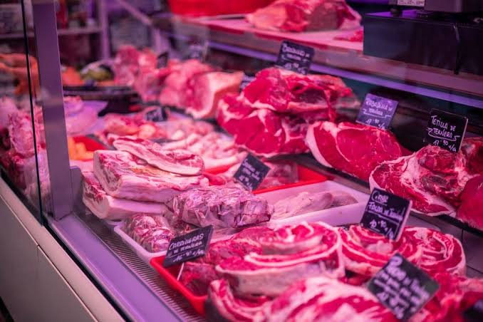
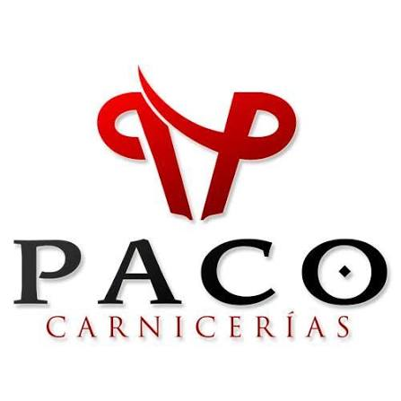

Ternera
Tierna y jugosa, ideal para filetes y guisos.
10,95 €/kg

Calidad y sabor de confianza
Nuestro catálogo
Carne para cada ocasión: para la plancha, el horno, los guisos, las barbacoas y las comidas en familia.

Tierna y jugosa, ideal para filetes y guisos.
10,95 €/kg
Envasado al vacío gratuito: preparamos tus pedidos listos para conservar o congelar.